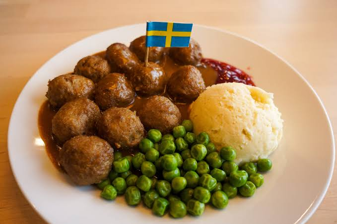

Cardamom bun
Baked on fresh cardamom and pearl sugar.
SEK 35
With us, everything is baked from scratch. Come in for a bun, a cup of coffee and a moment for yourself.
See the menu
Baked on fresh cardamom and pearl sugar.
SEK 35

Locally roasted, with free wear.
SEK 32

Sourdough bread, aged cheese and crispy salad.
SEK 35

Homemade with love and locally sourced ingredients.
SEK 45
Café Kardemumma opened in 2019 and is run by two friends who wanted a place where you dare to stay. We shop locally and bake every day.
Open weekdays 07–18 and weekends 09–16.